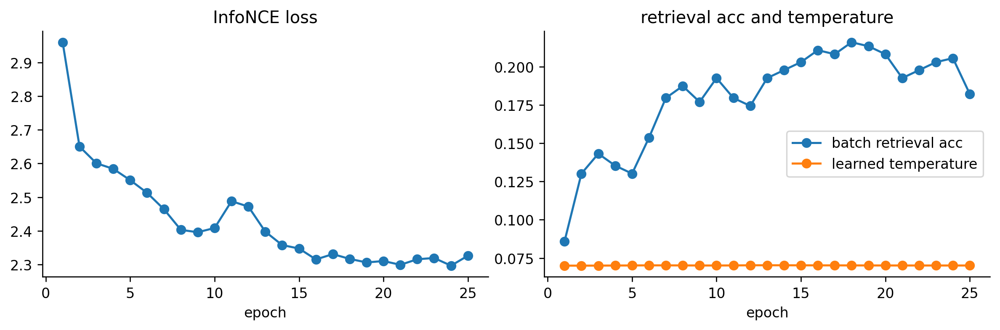
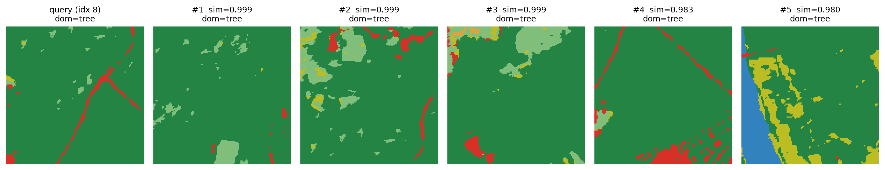

RS-CLIP on BharatEO: Tiny Contrastive Image-Text Model on WorldCover
Companion to the BharatEO MAE post: a pedagogical RS-CLIP-style model trained on the same ESA WorldCover ROIs. Tiny image and text encoders, InfoNCE loss, zero-shot land cover classification, image-text retrieval.
earth-observation
foundation-models
clip
contrastive
remote-sensing
bharateo
worldcover
pytorch
Author
Nipun Batra
Published
May 6, 2026
RS-CLIP, but tiny, on real WorldCover ROIs
This notebook is the contrastive-learning counterpart to the BharatEO-v0 MAE post. The data and chips are the same — three real ESA WorldCover 2021 v200 ROIs from the N27E075 tile (Delhi NCR, Shekhawati, the Mathura cropland belt) — but the objective is different.
Instead of masked reconstruction, we train two small encoders side by side:
an image encoder that turns a 128 x 128 RGB chip into a fixed-length embedding,
a text encoder that turns a short land-cover caption into the same kind of embedding,
and we pull matching image / text pairs together while pushing non-matches apart, exactly like CLIP. This is the essence of RS-CLIP-style remote-sensing vision-language models, scaled down to something that runs in a couple of minutes on CPU.
The win: once trained, you can do zero-shot land cover classification by comparing each image embedding to a small set of class-template text embeddings ("an aerial view of cropland", "an aerial view of built-up urban area", …) and picking the most similar one.
Caveats up front:
The chip is still a colorized rendering of WorldCover classes, not Sentinel-2 reflectance. So the alignment task is easier than the real RS-CLIP problem, and the headline numbers are inflated. Treat them as a sanity check, not a benchmark.
The captions are templated from the dominant collapsed class plus an optional secondary class. They are not human-written.
The encoders are deliberately tiny (~1-2 M params each).
Setup, seeds, and shared constants
Most of this is identical to the MAE post so the two notebooks can be read independently.
from pathlib import Pathimport osimport randomimport warningsos.environ.setdefault("MPLCONFIGDIR", "/private/tmp/matplotlib-cache")Path(os.environ["MPLCONFIGDIR"]).mkdir(parents=True, exist_ok=True)%matplotlib inline%config InlineBackend.figure_format ="retina"import numpy as npimport matplotlib.pyplot as pltimport rasteriofrom rasterio.windows import Windowimport torchimport torch.nn as nnimport torch.nn.functional as Ffrom torch.utils.data import Dataset, DataLoaderplt.rcParams.update({"figure.dpi": 120,"savefig.dpi": 240,"axes.spines.top": False,"axes.spines.right": False,})SEED =42random.seed(SEED)np.random.seed(SEED)torch.manual_seed(SEED)warnings.filterwarnings("ignore", message="enable_nested_tensor.*")device = torch.device("cpu")print("device:", device)
device: cpu
Geometry, training budget, and label space
The image side uses the same chip / patch sizes as the MAE post. The text side has a tiny vocabulary because all captions are built from a fixed set of land-cover phrases.
IMG_SIZE =128PATCH_SIZE =16GRID_SIZE = IMG_SIZE // PATCH_SIZENUM_PATCHES = GRID_SIZE * GRID_SIZENUM_INPUT_CHANNELS =3DATASET_SIZE =384BATCH_SIZE =32EPOCHS =25EMBED_DIM =128# joint image-text embedding dimIMG_HIDDEN =128# image encoder widthTEXT_HIDDEN =128# text encoder widthMAX_TEXT_LEN =16TEMP_INIT =0.07# CLIP-style temperatureCLASS_NAMES = ["tree","cropland","grass_shrub","built_up","bare_sparse","water","wetland_mangrove","rare_other",]NUM_CLASSES =len(CLASS_NAMES)CLASS_PHRASES = {"tree": "trees","cropland": "cropland","grass_shrub": "grassland and shrubs","built_up": "built-up urban area","bare_sparse": "bare or sparsely vegetated land","water": "open water","wetland_mangrove": "wetland","rare_other": "miscellaneous land cover",}print(f"chip: {NUM_INPUT_CHANNELS} x {IMG_SIZE} x {IMG_SIZE}")print(f"tokens: {NUM_PATCHES} ({GRID_SIZE} x {GRID_SIZE})")print(f"chips: {DATASET_SIZE}, epochs: {EPOCHS}, batch: {BATCH_SIZE}")print(f"joint embedding dim: {EMBED_DIM}, max text length: {MAX_TEXT_LEN}")
chip: 3 x 128 x 128
tokens: 64 (8 x 8)
chips: 384, epochs: 25, batch: 32
joint embedding dim: 128, max text length: 16
ESA WorldCover collapsed labels
WorldCover v200 has 11 native codes. We collapse them into 8 classes, identical to the MAE post.
NATIVE_TO_COLLAPSED_NAME = {10: "tree",20: "grass_shrub",30: "grass_shrub",40: "cropland",50: "built_up",60: "bare_sparse",70: "rare_other",80: "water",90: "wetland_mangrove",95: "wetland_mangrove",100: "rare_other",}CLASS_TO_ID = {name: i for i, name inenumerate(CLASS_NAMES)}NATIVE_TO_COLLAPSED_ID = np.full(256, CLASS_TO_ID["rare_other"], dtype=np.int64)for code, name in NATIVE_TO_COLLAPSED_NAME.items(): NATIVE_TO_COLLAPSED_ID[code] = CLASS_TO_ID[name]CLASS_COLORS = np.array([ [35, 132, 67], [188, 189, 34], [127, 191, 123], [215, 48, 39], [217, 164, 65], [49, 130, 189], [44, 162, 95], [189, 189, 189],], dtype=np.float32) /255.0def collapse_worldcover(native_map):return NATIVE_TO_COLLAPSED_ID[native_map]def labels_to_rgb(labels): arr = labels.detach().cpu().numpy() if torch.is_tensor(labels) else labelsreturn CLASS_COLORS[arr]def labels_to_rgb_input(labels):return CLASS_COLORS[labels].transpose(2, 0, 1).astype(np.float32)def patch_mode_labels(label_map): blocks = label_map.reshape(GRID_SIZE, PATCH_SIZE, GRID_SIZE, PATCH_SIZE) blocks = blocks.transpose(0, 2, 1, 3).reshape(GRID_SIZE, GRID_SIZE, -1) out = np.zeros((GRID_SIZE, GRID_SIZE), dtype=np.int64)for r inrange(GRID_SIZE):for c inrange(GRID_SIZE): out[r, c] = np.bincount(blocks[r, c], minlength=NUM_CLASSES).argmax()return out
Three real WorldCover ROIs from the N27E075 tile
Same three ROIs as the MAE post: Delhi NCR (built-up dominant), Shekhawati (semi-arid Rajasthan), Mathura belt (UP cropland). Each is a 2048 x 2048 10 m crop, cached locally after the first download.
[delhi_ncr] center (77.23, 28.61) shape (2048, 2048)
[shekhawati] center (75.8, 28.5) shape (2048, 2048)
[mathura_belt] center (77.5, 27.3) shape (2048, 2048)
Captions
Each chip gets a templated caption derived from its dominant collapsed class, with an optional secondary class if a second class covers more than ~15% of the chip. Concretely:
pure: "an aerial view of {dom}",
mixed: "an aerial view of {dom} with some {second}".
This is the kind of weak supervision RS-CLIP papers generate from segmentation masks or external caption banks, just shrunk to a tiny vocabulary so the text encoder can be trained from scratch in this notebook.
SECOND_CLASS_FRACTION =0.15def chip_caption(collapsed_chip): counts = np.bincount(collapsed_chip.ravel(), minlength=NUM_CLASSES) order = np.argsort(-counts) dom = CLASS_NAMES[order[0]] dom_phrase = CLASS_PHRASES[dom] second_id = order[1]if counts[second_id] / counts.sum() >= SECOND_CLASS_FRACTION: second_phrase = CLASS_PHRASES[CLASS_NAMES[second_id]]returnf"an aerial view of {dom_phrase} with some {second_phrase}", domreturnf"an aerial view of {dom_phrase}", domfor cls in CLASS_NAMES:print(f" {cls:18s} -> 'an aerial view of {CLASS_PHRASES[cls]}'")
tree -> 'an aerial view of trees'
cropland -> 'an aerial view of cropland'
grass_shrub -> 'an aerial view of grassland and shrubs'
built_up -> 'an aerial view of built-up urban area'
bare_sparse -> 'an aerial view of bare or sparsely vegetated land'
water -> 'an aerial view of open water'
wetland_mangrove -> 'an aerial view of wetland'
rare_other -> 'an aerial view of miscellaneous land cover'
A tiny word-level tokenizer
The vocabulary covers exactly the words that can appear in our templated captions. We add [PAD], [SOS], [EOS] so the text encoder has clear sequence boundaries.
SPECIAL_TOKENS = ["[PAD]", "[SOS]", "[EOS]"]PAD_ID, SOS_ID, EOS_ID =0, 1, 2def caption_corpus(): corpus = []for cls in CLASS_NAMES: corpus.append(f"an aerial view of {CLASS_PHRASES[cls]}")for a in CLASS_NAMES:for b in CLASS_NAMES:if a != b: corpus.append(f"an aerial view of {CLASS_PHRASES[a]} with some {CLASS_PHRASES[b]}")return corpusvocab_words = []seen =set(SPECIAL_TOKENS)for sentence in caption_corpus():for word in sentence.split():if word notin seen: seen.add(word) vocab_words.append(word)VOCAB = SPECIAL_TOKENS + vocab_wordsWORD_TO_ID = {w: i for i, w inenumerate(VOCAB)}VOCAB_SIZE =len(VOCAB)def tokenize(sentence, max_len=MAX_TEXT_LEN): ids = [SOS_ID] + [WORD_TO_ID[w] for w in sentence.split()] + [EOS_ID] ids = ids[:max_len] pad = max_len -len(ids)return ids + [PAD_ID] * paddef detokenize(ids): words = []for i in ids:if i == EOS_ID:breakif i in (PAD_ID, SOS_ID):continue words.append(VOCAB[i])return" ".join(words)example = tokenize("an aerial view of cropland")print("vocab size:", VOCAB_SIZE)print("max_len:", MAX_TEXT_LEN)print("example tokens:", example)print("decoded: ", detokenize(example))
vocab size: 27
max_len: 16
example tokens: [1, 3, 4, 5, 6, 8, 2, 0, 0, 0, 0, 0, 0, 0, 0, 0]
decoded: an aerial view of cropland
Dataset
Each item is (rgb_chip, token_ids, dominant_class_id). The dominant class id is only used for evaluation — the encoders never see it during training. Chips are drawn balanced across the three ROIs.
class WorldCoverCLIPDataset(Dataset):def__init__(self, roi_natives, n=DATASET_SIZE, chip_size=IMG_SIZE, seed=SEED, min_classes=2):self.samples = [] rng = np.random.default_rng(seed) target_per_roi = [n //len(roi_natives)] *len(roi_natives)for i inrange(n -sum(target_per_roi)): target_per_roi[i] +=1 attempts =0for roi_native, want inzip(roi_natives, target_per_roi): collected =0 h, w = roi_native.shapewhile collected < want and attempts < n *400: attempts +=1 row =int(rng.integers(0, h - chip_size)) col =int(rng.integers(0, w - chip_size)) collapsed = collapse_worldcover(roi_native[row:row + chip_size, col:col + chip_size])if np.unique(collapsed).size < min_classes:continue caption, dom = chip_caption(collapsed)self.samples.append(( labels_to_rgb_input(collapsed), np.array(tokenize(caption), dtype=np.int64), CLASS_TO_ID[dom], caption, )) collected +=1iflen(self.samples) != n:raiseRuntimeError(f"Built {len(self.samples)} chips, expected {n}")def__len__(self):returnlen(self.samples)def__getitem__(self, idx): rgb, ids, dom_id, _caption =self.samples[idx]return torch.from_numpy(rgb), torch.from_numpy(ids), torch.tensor(dom_id, dtype=torch.long)dataset = WorldCoverCLIPDataset(roi_arrays)class_balance = np.bincount([s[2] for s in dataset.samples], minlength=NUM_CLASSES)print("dataset chips:", len(dataset))print("dominant class distribution:")for name, count inzip(CLASS_NAMES, class_balance):print(f" {name:18s}{count}")
dataset chips: 384
dominant class distribution:
tree 44
cropland 254
grass_shrub 0
built_up 86
bare_sparse 0
water 0
wetland_mangrove 0
rare_other 0
A few image-caption pairs
These are the kinds of pairs the contrastive loss will pull together.
A tiny ViT: linear patch embedding, learned positional embedding, a small transformer encoder, and mean pooling followed by a projection into the joint embedding space.
def patchify(x, patch_size=PATCH_SIZE): b, c, h, w = x.shape p = patch_size gh, gw = h // p, w // preturn x.reshape(b, c, gh, p, gw, p).permute(0, 2, 4, 1, 3, 5).reshape(b, gh * gw, c * p * p)class TinyImageEncoder(nn.Module):def__init__(self, hidden=IMG_HIDDEN, depth=3, heads=4, embed_dim=EMBED_DIM):super().__init__() token_dim = NUM_INPUT_CHANNELS * PATCH_SIZE * PATCH_SIZEself.patch_embed = nn.Linear(token_dim, hidden)self.pos_embed = nn.Parameter(torch.zeros(1, NUM_PATCHES, hidden)) layer = nn.TransformerEncoderLayer( d_model=hidden, nhead=heads, dim_feedforward=4* hidden, dropout=0.0, activation="gelu", batch_first=True, norm_first=True, )self.encoder = nn.TransformerEncoder(layer, num_layers=depth)self.norm = nn.LayerNorm(hidden)self.proj = nn.Linear(hidden, embed_dim) nn.init.trunc_normal_(self.pos_embed, std=0.02)def forward(self, x): z =self.patch_embed(patchify(x)) z =self.encoder(z +self.pos_embed) z =self.norm(z).mean(dim=1)returnself.proj(z)
Text encoder
A tiny Transformer over our small vocabulary. We add a learned [CLS]-style position-0 vector and pool from the position right after [EOS], just like CLIP does — except since EOS is at a variable position, we use mean pooling over non-pad tokens.
class TinyTextEncoder(nn.Module):def__init__(self, vocab_size=VOCAB_SIZE, hidden=TEXT_HIDDEN, depth=2, heads=4, max_len=MAX_TEXT_LEN, embed_dim=EMBED_DIM):super().__init__()self.token_embed = nn.Embedding(vocab_size, hidden, padding_idx=PAD_ID)self.pos_embed = nn.Parameter(torch.zeros(1, max_len, hidden)) layer = nn.TransformerEncoderLayer( d_model=hidden, nhead=heads, dim_feedforward=4* hidden, dropout=0.0, activation="gelu", batch_first=True, norm_first=True, )self.encoder = nn.TransformerEncoder(layer, num_layers=depth)self.norm = nn.LayerNorm(hidden)self.proj = nn.Linear(hidden, embed_dim) nn.init.trunc_normal_(self.pos_embed, std=0.02)def forward(self, ids):# ids: B x L z =self.token_embed(ids) +self.pos_embed[:, :ids.size(1)] pad_mask = ids == PAD_ID z =self.encoder(z, src_key_padding_mask=pad_mask) valid = (~pad_mask).float().unsqueeze(-1) pooled = (z * valid).sum(dim=1) / valid.sum(dim=1).clamp_min(1.0)returnself.proj(self.norm(pooled))
CLIP-style wrapper and InfoNCE loss
We L2-normalize both embeddings, scale the dot product by a learned temperature, and apply symmetric cross-entropy. The diagonal of the similarity matrix is the matching pair for each row / column.
class TinyRSCLIP(nn.Module):def__init__(self):super().__init__()self.image_encoder = TinyImageEncoder()self.text_encoder = TinyTextEncoder()self.log_temp = nn.Parameter(torch.tensor(np.log(1.0/ TEMP_INIT), dtype=torch.float32))def encode_image(self, x): z =self.image_encoder(x)return F.normalize(z, dim=-1)def encode_text(self, ids): z =self.text_encoder(ids)return F.normalize(z, dim=-1)def forward(self, x, ids): img =self.encode_image(x) txt =self.encode_text(ids) logits =self.log_temp.exp() * img @ txt.t()return img, txt, logitsdef info_nce(logits): targets = torch.arange(logits.size(0), device=logits.device)return0.5* (F.cross_entropy(logits, targets) + F.cross_entropy(logits.t(), targets))model = TinyRSCLIP().to(device)n_img =sum(p.numel() for p in model.image_encoder.parameters())n_txt =sum(p.numel() for p in model.text_encoder.parameters())print(f"image encoder params: {n_img/1e6:.2f}M")print(f"text encoder params: {n_txt/1e6:.2f}M")print(f"total params: {(n_img + n_txt +1)/1e6:.2f}M")
image encoder params: 0.72M
text encoder params: 0.42M
total params: 1.14M
Training loop
We train with AdamW + cosine schedule. The diagonal accuracy of the similarity matrix is a sanity-check metric that should rise quickly — it’s the easiest possible retrieval task (find the matching caption inside the same minibatch).
epochs = [h["epoch"] for h in history]fig, axes = plt.subplots(1, 2, figsize=(10, 3.4))axes[0].plot(epochs, [h["loss"] for h in history], marker="o")axes[0].set_title("InfoNCE loss")axes[0].set_xlabel("epoch")axes[1].plot(epochs, [h["acc"] for h in history], marker="o", label="batch retrieval acc")axes[1].plot(epochs, [h["temp"] for h in history], marker="o", label="learned temperature")axes[1].set_title("retrieval acc and temperature")axes[1].set_xlabel("epoch")axes[1].legend()plt.tight_layout()

Zero-shot land-cover classification
The classic CLIP recipe: build one text embedding per class using a fixed template, then for each chip pick the class whose text embedding has the highest cosine similarity to the chip’s image embedding.
This uses only the dominant collapsed class as ground truth. The model was never trained against this label directly — it only saw image / caption pairs.
model.eval()class_prompts = [f"an aerial view of {CLASS_PHRASES[c]}"for c in CLASS_NAMES]class_token_batch = torch.tensor([tokenize(p) for p in class_prompts], dtype=torch.long, device=device)with torch.no_grad(): class_text_emb = model.encode_text(class_token_batch) # NUM_CLASSES x EMBED_DIMcorrect = torch.zeros(NUM_CLASSES, dtype=torch.long)total = torch.zeros(NUM_CLASSES, dtype=torch.long)confusion = torch.zeros(NUM_CLASSES, NUM_CLASSES, dtype=torch.long)with torch.no_grad():for x, _ids, dom_id in DataLoader(dataset, batch_size=BATCH_SIZE): x = x.to(device) img_emb = model.encode_image(x) # B x EMBED_DIM sims = img_emb @ class_text_emb.t() # B x NUM_CLASSES pred = sims.argmax(dim=1).cpu()for t, p inzip(dom_id, pred): confusion[t, p] +=1 total[t] +=1 correct[t] +=int(t == p)overall_acc = correct.sum().item() /max(1, total.sum().item())print(f"overall zero-shot top-1 accuracy on dominant class: {overall_acc:.3f}")print()for name, c, t inzip(CLASS_NAMES, correct.tolist(), total.tolist()):if t ==0:print(f" {name:18s} (no chips)")else:print(f" {name:18s}{c}/{t} = {c/t:.3f}")
overall zero-shot top-1 accuracy on dominant class: 0.956
tree 44/44 = 1.000
cropland 238/254 = 0.937
grass_shrub (no chips)
built_up 85/86 = 0.988
bare_sparse (no chips)
water (no chips)
wetland_mangrove (no chips)
rare_other (no chips)
For each query chip we rank all 8 class prompts by cosine similarity. Bars in green are the actually-correct dominant class. This is the same panel used in CLIP papers.
A second use of CLIP-style embeddings: nearest-neighbor search inside the chip set. Given a query chip, sort the rest by cosine similarity in the joint space, and show the closest ones. Chips that share a dominant class should cluster.
all_img_emb = []all_dom = []with torch.no_grad():for x, _ids, dom_id in DataLoader(dataset, batch_size=BATCH_SIZE): x = x.to(device) all_img_emb.append(model.encode_image(x).cpu()) all_dom.append(dom_id)all_img_emb = torch.cat(all_img_emb)all_dom = torch.cat(all_dom)query_idx =8q_emb = all_img_emb[query_idx]sims = (all_img_emb @ q_emb).numpy()order = np.argsort(-sims)neighbors = [i for i in order if i != query_idx][:5]fig, axes = plt.subplots(1, 6, figsize=(14, 2.6))q_rgb, _, q_dom = dataset[query_idx]axes[0].imshow(q_rgb.numpy().transpose(1, 2, 0), interpolation="nearest")axes[0].set_title(f"query (idx {query_idx})\ndom={CLASS_NAMES[q_dom]}", fontsize=9)axes[0].axis("off")for col, n_idx inenumerate(neighbors, start=1): n_rgb, _, n_dom = dataset[int(n_idx)] axes[col].imshow(n_rgb.numpy().transpose(1, 2, 0), interpolation="nearest") axes[col].set_title(f"#{col} sim={sims[n_idx]:.3f}\ndom={CLASS_NAMES[n_dom]}", fontsize=9) axes[col].axis("off")plt.tight_layout()

What does it cost? Token + pair scale
For this notebook:
chips: 384
caption tokens / chip: at most 16 ([SOS] + 6-12 words + [EOS] + padding)
image tokens / chip: 64
training pairs per epoch: 384 (one positive + B-1 negatives in each minibatch)
For a real RS-CLIP run on Sentinel-2 + caption banks:
chips: 1M
caption length: ~40-60 tokens (real captions, not templated)
joint embedding: 512 or 768
batch size: 4096-32768 for healthy contrastive learning,
epochs: 30-100.
The lesson: contrastive learning is pair-hungry much more than parameter-hungry. Scaling RS-CLIP is mostly about (a) caption diversity and (b) very large effective batch sizes (gradient accumulation, distributed all-gather).
What changes for real RS-CLIP on BharatEO?
Keep:
the chip / patch geometry and the multi-ROI sampling story,
the InfoNCE / symmetric-CE loss,
the L2-normalized joint embedding and learned temperature,
the zero-shot classification recipe (text-prompt-per-class, cosine similarity).
Change:
input from palette RGB to Sentinel-2 reflectance (or Sentinel-2 + Sentinel-1 SAR for full RS-CLIP),
captions from class-template strings to a real caption bank: WorldCover-derived natural-language descriptions, OpenStreetMap tags, Wikipedia-style place captions, India-specific land-use vocabulary,
text encoder from a 2-layer transformer over a 30-word vocabulary to a real subword tokenizer (BPE / sentencepiece) over a 30K-50K vocabulary, possibly initialized from a pretrained encoder,
evaluation from in-domain dominant-class accuracy to held-out tasks: BigEarthNet, EuroSAT, BharatEO downstream tasks, or text-conditioned retrieval over India.
The pedagogical point: you can get the shape of a remote-sensing CLIP model — encoders, contrastive loss, prompt-based zero-shot — into a single notebook and run it on a laptop, and the upgrade path to a real BharatEO RS-CLIP is mostly about (a) replacing inputs with real reflectance and (b) using bigger, more diverse captions with bigger batches.